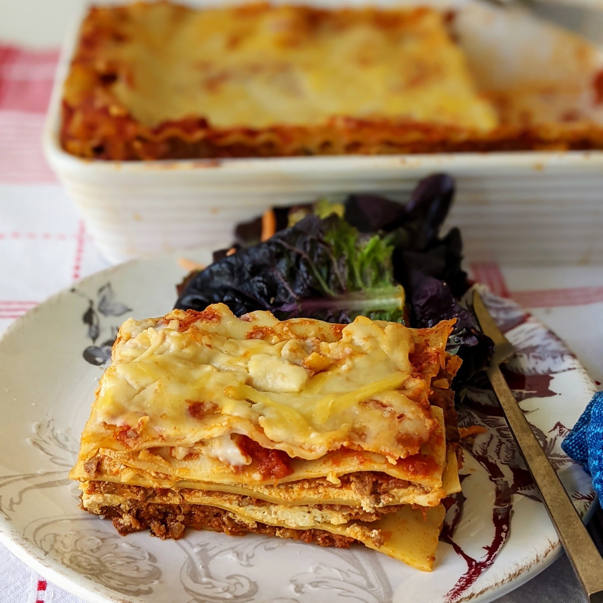

Lasagna

Ingredients
- Meat:This lasagna recipe starts with a pound of ground meat (1/2 ground pork, 1/2 lean ground beef)
- Onion:A diced onion is cooked until transulcent with the ground meat
- canned tomatoes:You"ll need a can of tomato sauce and a can of crushed tomatoes
- Fresh herbs:Two tblsp of parsley and on clove of garlic crushed
- Sugar:A dash of sugar
- Spices and seasonings:Dried basil,dried oregano,salt,and black pepper
- Noodles:Either uncooked or oven-ready lasagna noodles
- Cheese:Parmesan,recotta, and shredded mozzarella
- Eggs:To make cheese layer extra creamy